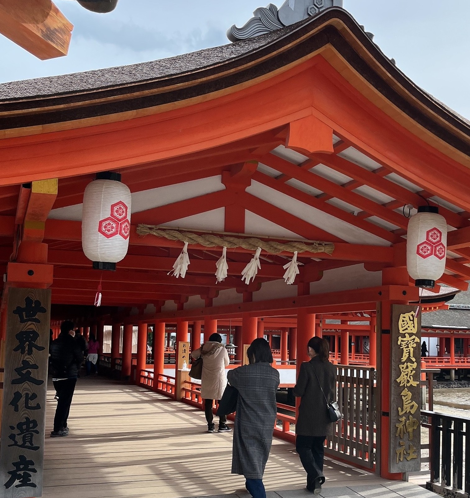

～岡山県＆広島県編～
2022年12月6日～8日に岡山県と広島県を旅行した記事になります！
まずは吾妻寿司で地元の海鮮を堪能！

今回は岡山地物入十二貫を頂きました！
岡山直結のさんすて岡山内のため電車の方でも行きやすいお店でした！
新鮮なネタがとても美味しくウニも臭みが全くなく大満足です！
お店：吾妻寿司 岡山駅店
営業時間：11:00～22:00
定休日：なし
予約可否：予約不可
駐車場：あり（岡山駅駐車場）
TEL：086-227-7337
住所：岡山県岡山市北区駅元町1-1 さんすて岡山2F
URL： 食べログで見る
岡山県の観光名所！岡山城！
日本三名園の一つ！後楽園を散策！

後楽園
営業時間：3月20日～9月30日 7:30～18:00
10月1日～3月19日 8:00～17:00定休日：なし
駐車場：あり 普通車：40分あたり100円
TEL：086-272-1148
住所：岡山市北区後楽園1-5
URL： 後楽園公式サイト
吉備津神社

吉備津神社（きびつじんじゃ）
営業時間：開門5:00、閉門18:00（授与所9:00～14:30）
定休日：なし
駐車場：あり
TEL：086-287-4111
住所：岡山県岡山市北区吉備津931
URL： 吉備津神社公式サイト
最上稲荷
かき傳

お店：かき傳
営業時間：17:00～22:00(月)
11:00～14:00、17:00～22:00(火・水・木・金・土)定休日：日曜日
予約可否：予約可
駐車場：あり(お店の前に3台)
TEL：050-5593-6148
住所：広島県広島市東区光町2-8-24
URL： 食べログで見る
広島護國神社

広島護國神社
営業時間：6:00～16:30(授与所9:00～16:30)
定休日：なし
駐車場：あり
TEL：082-221-5590
住所：広島市中区基町21番2号
URL： 広島護國神社公式サイト
広島城

広島城
営業時間：3月から11月 9:00～18:00
12月から2月 9:00～17:00定休日：12月29日～12月31日
駐車場：なし
TEL：082-221-7512
住所：広島市中区基町21番1号
URL： 広島城公式サイト
原爆ドーム
厳島神社

厳島神社
営業時間：3月1日～10月14日 6:30～18:00
10月15日～11月30日 6:30～17:30定休日：なし
駐車場：なし
TEL：0829-44-2020
住所：広島県廿日市市宮島町1-1
URL： 厳島神社公式サイト
豊国神社
福山城
かき小屋

お店：かき小屋 尾道店
営業時間：11:00～15:00 17:00～21:00
定休日：火・水 12月31日、1月1日
予約可否：予約可
駐車場：あり
TEL：090-7990-5818
住所：広島県尾道市山波町298-1
URL：食べログで見る
姫路城

姫路城
営業時間：9:00～17:00
定休日：12月29日～30日
予約可否：2025年4月1日よりデジタル券の事前購入が可能です
デジタルチケット購入画面URL駐車場：あり 普通車：3時間以内600円
住所：兵庫県姫路市本町68
URL：姫路市公式ウェブサイト
志ん

お店：志ん（しん）
営業時間：11:30～15:30 17:30～22:30
定休日：月曜日
予約可否：予約不可
駐車場：なし
TEL：078-391-4588
住所：兵庫県神戸市中央区北長狭通2丁目10-12 SEIGYOビル2Ｆ
URL：食べログで見る


いかがでしたでしょうか！
ほとんどご飯で観光部分がほとんどなかったですが少しでも参考になれば幸いです！